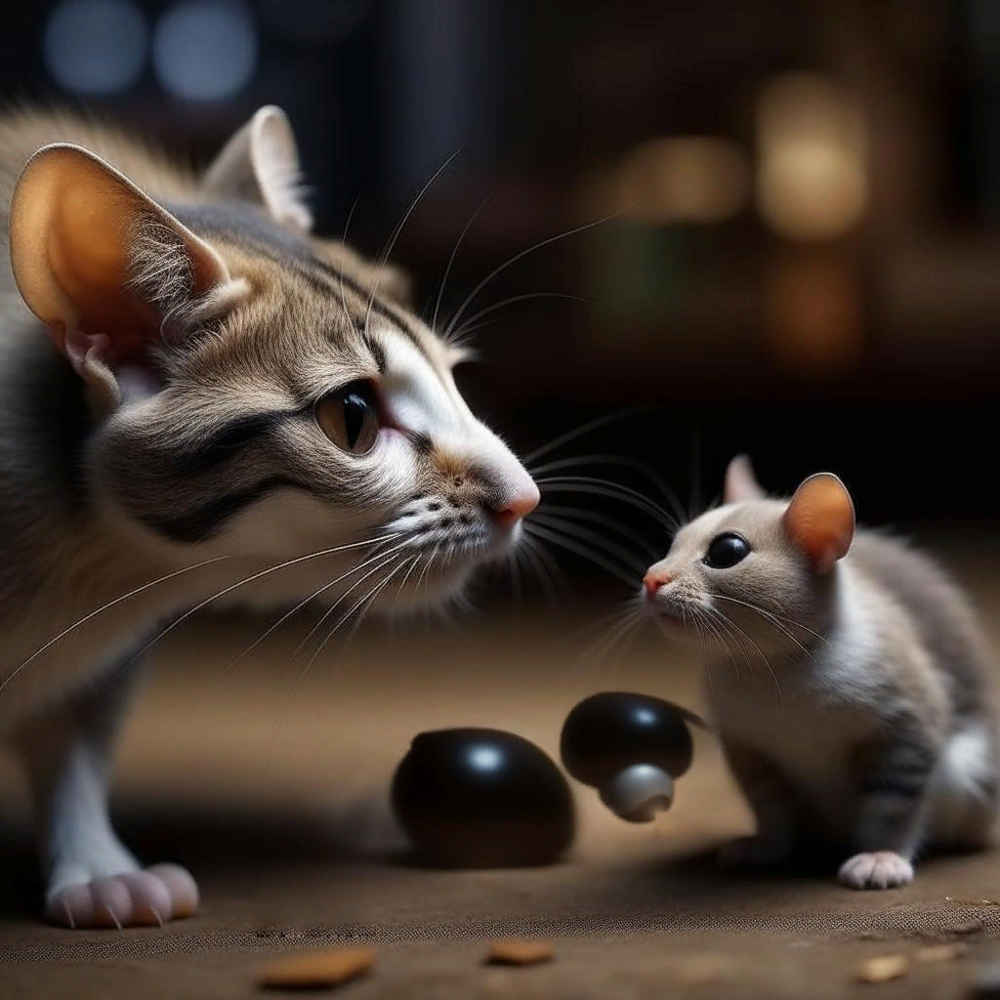
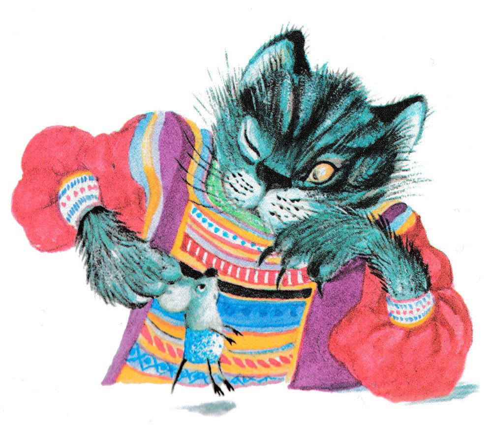
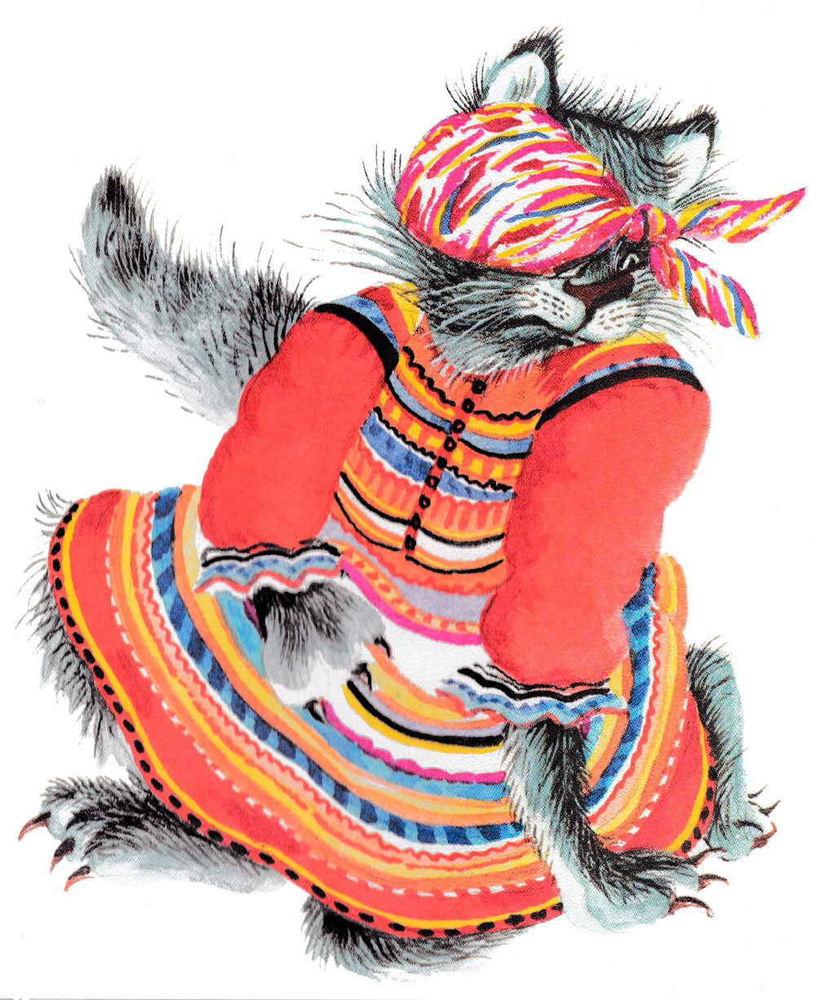
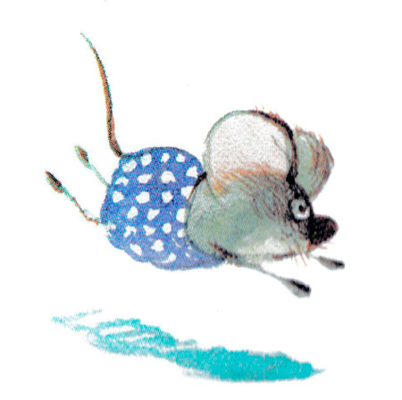
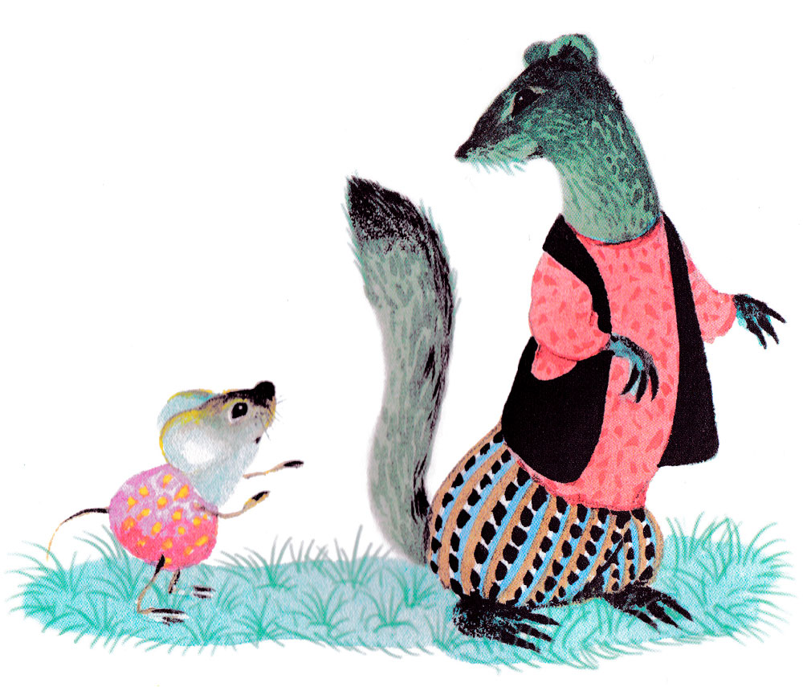
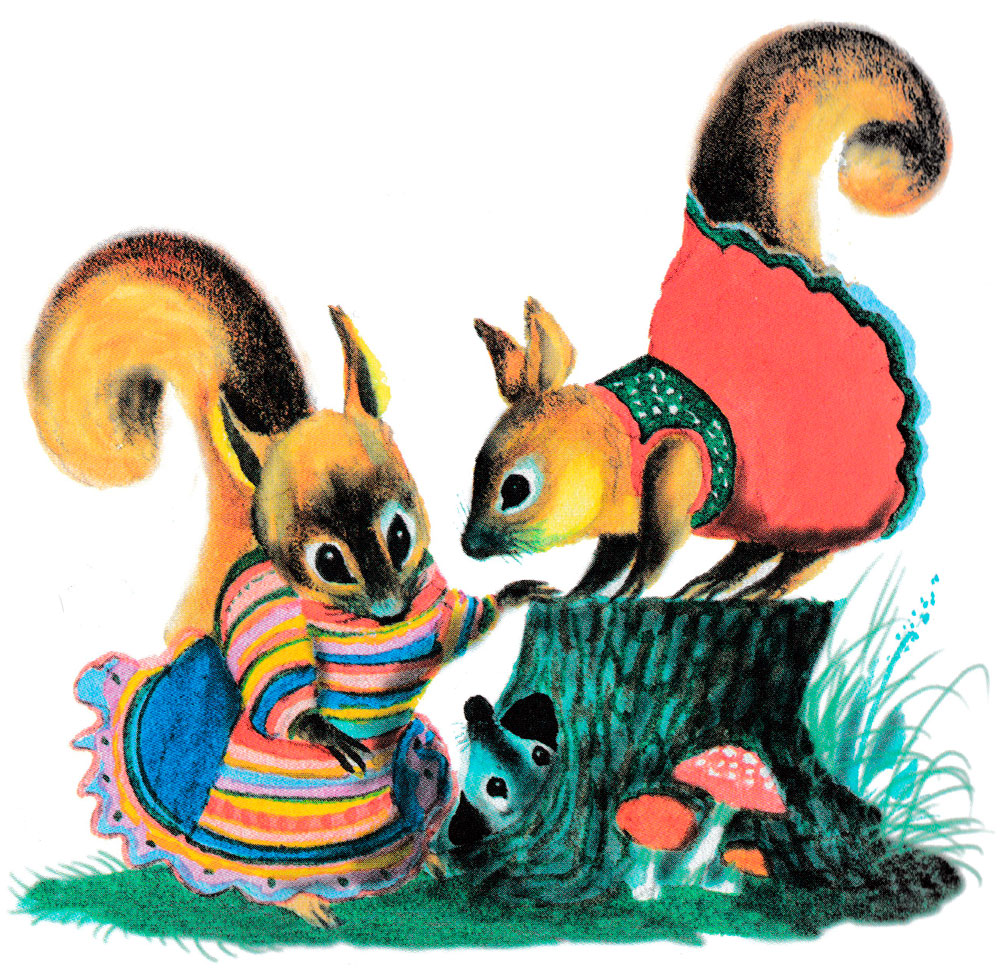
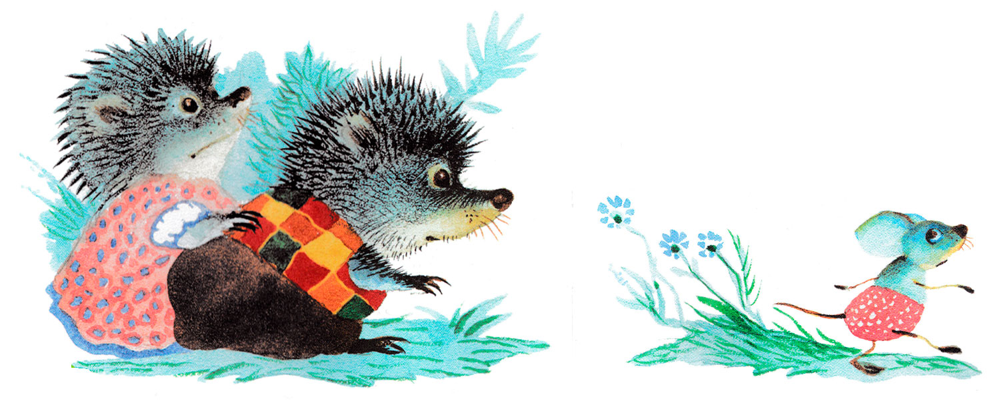
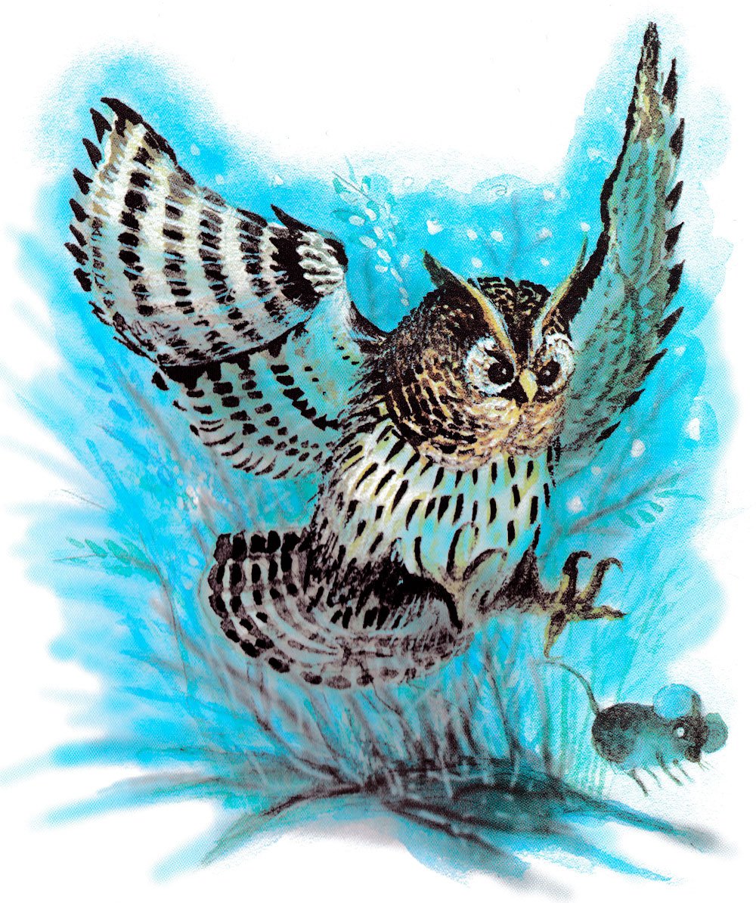

Сказка об умном мышонке
Самуил Маршак
Унесла мышонка кошка
И поет: — Не бойся, крошка.
Поиграем час-другой
В кошки-мышки, дорогой!
Перепуганный спросонок,
Отвечает ей мышонок:
— В кошки-мышки наша мать
Не велела нам играть.

— Мур-мур-мур, — мурлычет кошка,
Поиграй, дружок, немножко.
А мышонок ей в ответ:
— У меня охоты нет.
Поиграл бы я немножко,
Только, пусть, я буду кошкой.
Ты же, кошка, хоть на час
Мышкой будь на этот раз!
Засмеялась кошка Мурка:
— Ах ты, дымчатая шкурка!
Как тебя ни называть,
Мышке кошкой не бывать.
Говорит мышонок Мурке:
— Ну, тогда сыграем в жмурки!
Завяжи глаза платком
И лови меня потом.
Завязала кошка глазки,
Но глядит из-под повязки,
Даст мышонку отбежать
И опять бедняжку — хвать!

Говорит он хитрой кошке:
— У меня устали ножки,
Дай, пожалуйста, чуть-чуть
Мне прилечь и отдохнуть.
— Хорошо, — сказала кошка,
Отдохни, коротконожка,
Поиграем, а затем
Я тебя, голубчик, съем!
Кошке — смех, мышонку — горе…
Но нашел он щель в заборе.
Сам не знает, как пролез.
Был мышонок — да исчез!

Вправо, влево смотрит кошка:
— Мяу-мяу, где ты, крошка?
А мышонок ей в ответ:
— Там, где был, меня уж нет!
Покатился он с пригорка,
Видит: маленькая норка.
В этой норке жил зверек
Длинный, узенький хорек.

Острозубый, остроглазый,
Был он вором и пролазой
И, бывало, каждый день
Крал цыплят из деревень.
Вот пришел хорек с охоты,
Гостя спрашивает: — Кто ты?
Коль попал в мою нору,
Поиграй в мою игру!
— В кошки-мышки или в жмурки?
Говорит мышонок юркий.
— Нет, не в жмурки. Мы, хорьки,
Больше любим «уголки».
— Что ж, сыграем, но сначала
Посчитаемся, пожалуй:
Я — зверек,
И ты — зверек,
Я — мышонок,
Ты — хорек,
Ты хитер,
А я умен,
Кто умен,
Тот вышел вон!
— Стой! — кричит хорек мышонку
И бежит за ним вдогонку,
А мышонок — прямо в лес
И под старый пень залез.
Стали звать мышонка белки:
— Выходи играть в горелки!
— У меня, — он говорит,
Без игры спина горит!

В это время по дорожке
Шел зверек страшнее кошки,
Был на щетку он похож.
Это был, конечно, еж.
А навстречу шла ежиха
Вся в иголках, как портниха.
Закричал мышонку еж:
— От ежей ты не уйдешь!

Вот идет моя хозяйка,
С ней в пятнашки поиграй-ка,
А со мною — в чехарду.
Выходи скорей — я жду!
А мышонок это слышал,
Да подумал и не вышел.
— Не хочу я в чехарду,
На иголки попаду!
Долго ждали еж с ежихой,
А мышонок тихо-тихо
По тропинке меж кустов
Прошмыгнул — и был таков!
Добежал он до опушки.
Слышит — квакают лягушки:
— Караул! Беда! Ква-ква!
К нам сюда летит сова!

Поглядел мышонок: мчится
То ли кошка, то ли птица,
Вся рябая, клюв крючком,
Перья пестрые торчком.
А глаза горят, как плошки,
Вдвое больше, чем у кошки.
У мышонка замер дух.
Он забился под лопух.
А сова — все ближе, ближе,
А сова — все ниже, ниже
И кричит в тиши ночной:
— Поиграй, дружок, со мной!
Пропищал мышонок: — В прятки?
И пустился без оглядки,
Скрылся в скошенной траве.
Не найти его сове.
До утра сова искала.
Утром видеть перестала.
Села, старая, на дуб
И глазами луп да луп.
А мышонок вымыл рыльце
Без водицы и без мыльца
И пошел искать свой дом.
Где остались мать с отцом.
Шел он, шел, взошел на горку
И внизу увидел норку.
То-то рада мышка-мать!
Ну мышонка обнимать!
А сестренки и братишки
С ним играют в мышки-мышки.